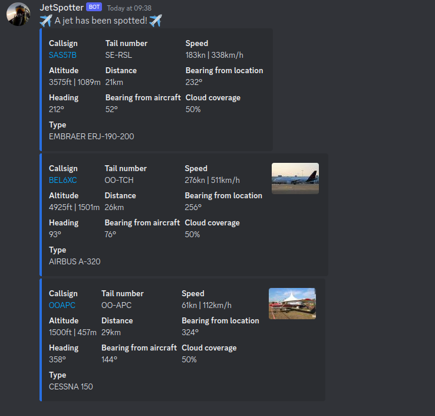

Overview
Jetspotter is a simple program that queries the ADS-B API. It is used to send notifications if a specified type of aircraft has been spotted within a specified range of a target location. If one or more jets have been spotted, a notification is sent. The notification contains some metadata about the aircraft, a picture fetched from planespotters.net and a link to track the aircraft. A notification is only sent once for each aircraft. If the aircraft leaves your maximum configured range for at least 1 fetch iteration, a notification will be sent again as soon as it enters your maximum configured range.
Notifications
Terminal output is always shown. Depending on the configuration, notifications can also be sent via other media.
Terminal
{kind=link}
Slack
Slack notifications are sent if the SLACK_WEBHOOK_URL environment variable is defined.
Documentation how to set up notifications using incoming webhooks can be found in the official slack documentation.
{kind=link}
Discord
Discord notifications are sent if the DISCORD_WEBHOOK_URL environment variable is defined.
Documentation how to set up notifications using incoming webhooks can be found in the official discord documentation.
By default the color of the embed message is related to the altitude of the aircraft. The color scheme is the same as on the airplanes map. This feature can be disabled in the configuration to use the same static color for every embed message.
If the altitude color feature is enabled:
{kind=link}
If the altitude color feature is disabled: 
{kind=link}
Gotify
Gotify notifications are sent if the GOTIFY_URL and GOTIFY_TOKEN environment variables are defined.

Ntfy
Ntfy notifications are sent if the NTFY_TOPIC environment variable is defined.

Grafana
Prometheus and Grafana can be leveraged to create dashboards.

web interface
A web interface is available on port 8080.
You can log in to access the configration page using the admin username and jetspotter password.
{kind=link}
Getting started
Windows
Download the latest release that matches your architecture and operating system. If you don't know, then you probably need jetspotter-windows-amd64.
Rename the file and add .exe as extension. The full name of the file should be jetspotter-windows-amd64.exe
By default Windows does not show any file extension. You can enable this by clicking on View and checking the File name extensions box.
{kind=link}
Open Windows PowerShell and navigate to the directory of the jetspotter-windows-amd64.exe file using the cd command.
# Most likely it is stored in your Downloads folder
cd .\Downloads\
Specify the configuration variables of your choice and run the application.
{kind=link}
# Spot all aircraft within 40 kilometers of Eiffel Tower and send a Discord notification
$env:LOCATION_LATITUDE="48.85830654260347"
$env:LOCATION_LONGITUDE="2.294309636051661"
$env:MAX_RANGE_KILOMETERS="40"
$env:DISCORD_WEBHOOK_URL="https://discord.com/api/webhooks/XXXXXX/YYYYYY"
.\jetspotter-windows-amd64.exe
Examples
Run jetspotter without extra parameters.
# Docker
docker run ghcr.io/vvanouytsel/jetspotter:latest
# Binary
./jetspotter
Only show F16 and A400 aircraft within 100 kilometers of Kleine-Brogel airbase.
# Docker
docker run -e LOCATION_LATITUDE=51.1697898378895 -e LOCATION_LONGITUDE=5.470114381971933 -e AIRCRAFT_TYPES=F16,A400 -e MAX_RANGE_KILOMETERS=100 ghcr.io/vvanouytsel/jetspotter:latest
# Binary
LOCATION_LATITUDE=51.1697898378895 LOCATION_LONGITUDE=5.470114381971933 AIRCRAFT_TYPES=F16,A400 MAX_RANGE_KILOMETERS=100 ./jetspotter
Show all aircraft within 40 kilometers of Kleine-Brogel airbase and port-forward the UI to localhost:8080.
# Docker
docker run -e LOCATION_LATITUDE=51.1697898378895 -e LOCATION_LONGITUDE=5.470114381971933 -e MAX_RANGE_KILOMETERS=40 -p 8080:8080 ghcr.io/vvanouytsel/jetspotter:latest
Show all military aircraft within 20 kilometers of Kleine-Brogel airbase.
# Docker
docker run -e LOCATION_LATITUDE=51.1697898378895 -e LOCATION_LONGITUDE=5.470114381971933 -e AIRCRAFT_TYPES=MILITARY -e MAX_RANGE_KILOMETERS=20 ghcr.io/vvanouytsel/jetspotter:latest
# Binary
LOCATION_LATITUDE=51.1697898378895 LOCATION_LONGITUDE=5.470114381971933 AIRCRAFT_TYPES=MILITARY MAX_RANGE_KILOMETERS=20 ./jetspotter
Scan all aircraft within a radius of 50 kilometers of Kleine-Brogel airbase, but only send notifications for military aircraft within a radius of 30 kilometers. (Aircraft between 30 and 50 kilometers still show up in the UI and the metrics)
# Docker
docker run -e LOCATION_LATITUDE=51.1697898378895 -e LOCATION_LONGITUDE=5.470114381971933 -e AIRCRAFT_TYPES=MILITARY -e MAX_SCAN_RANGE_KILOMETERS=50 -e MAX_RANGE_KILOMETERS=30 ghcr.io/vvanouytsel/jetspotter:latest
# Binary
LOCATION_LATITUDE=51.1697898378895 LOCATION_LONGITUDE=5.470114381971933 AIRCRAFT_TYPES=MILITARY MAX_SCAN_RANGE_KILOMETERS=50 MAX_RANGE_KILOMETERS=30 ./jetspotter
Show all military and AIRBUS A320 aircraft within 30 kilometers of Kleine-Brogel airbase.
# Docker
docker run -e LOCATION_LATITUDE=51.1697898378895 -e LOCATION_LONGITUDE=5.470114381971933 -e AIRCRAFT_TYPES=MILITARY,A320 -e MAX_RANGE_KILOMETERS=30 ghcr.io/vvanouytsel/jetspotter:latest
# Binary
LOCATION_LATITUDE=51.1697898378895 LOCATION_LONGITUDE=5.470114381971933 AIRCRAFT_TYPES=MILITARY,A320 MAX_RANGE_KILOMETERS=30 ./jetspotter
Send a slack notification if one or more aircraft are spotted
# Docker
docker run -e SLACK_WEBHOOK_URL=https://hooks.slack.com/services/XXX/YYY/ZZZ
ghcr.io/vvanouytsel/jetspotter:latest
# Binary
SLACK_WEBHOOK_URL=https://hooks.slack.com/services/XXX/YYY/ZZZ ./jetspotter
Send a discord notification if one or more aircraft are spotted
# Docker
docker run -e DISCORD_WEBHOOK_URL=https://discord.com/api/webhooks/XXXXXX/YYYYYY
ghcr.io/vvanouytsel/jetspotter:latest
# Binary
DISCORD_WEBHOOK_URL=https://discord.com/api/webhooks/XXXXXX/YYYYYY ./jetspotter
Send a gotify notification if one or more aircraft are spotted
# Docker
docker run -e GOTIFY_URL=http://my-gotify-server:85 -e GOTIFY_TOKEN=XXXX
ghcr.io/vvanouytsel/jetspotter:latest
# Binary
GOTIFY_URL=http://my-gotify-server:85 GOTIFY_TOKEN=XXXX ./jetspotter
Helm
Helm charts are available in the oci registry. Configuration values can be found in the repository or via artifact hub.
helm install -n jetspotter --create-namespace oci://ghcr.io/vvanouytsel/jetspotter-chart/jetspotter
Releases
Releases can be found on the GitHub repository.
Container images
Container images are also created for each release.